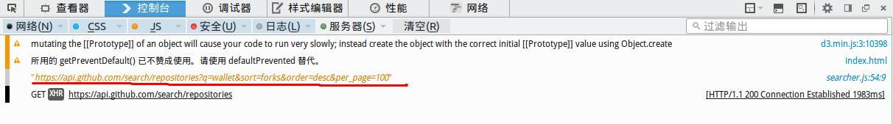

Nodejs让您的前端开发像子弹飞一样
前言
从本文开始，我们正式进入Nodejs的世界。
本文，将指引您搭建Nodejs开发环境，向您介绍Nodejs的安装、使用，帮您快速进入Nodejs的世界。
通过本文，让您对前端开发有一个完整、全新的认知，可以学习到如何将一些第三方平台的资源为己所用，比如像巴比特一样即时显示交易市场的交易行情。
本文的实例，就是上篇文章提到的加密货币开发语言统计分析项目(Statistical Analysis of Cryptocurrency Development Languages，简称Sacdl)，点击这里，在线体验。
项目需求
Sacdl项目需要具备以下几个功能：
- 方便地读取第三方网站（这里是github）的Api，实现项目搜索功能；
- 对读取的数据集中处理，方便地转化为我们需要的信息；
- 通过柱状图、矩阵图、表格等图表格式，将数据可视化；
- 方便扩展，为以后添加更多图表样式或其他网站Api（比如交易市场的）做好准备。
技术选型
无处不选择。大方向要选择，具体到每个开发包都要去甄别，安全吗？好用吗？性能高吗？是否有更好的方案？等等。
仅从上述需求来说，一个html文件，再加一个js文件就基本搞定，第三方包都用不着，Nodejs更是大才小用。
但事实上，很多仅仅是前端的项目，比如：Bootstrap等，都基于Nodejs，为什么？答案很简单，它供了诸多方便实用的工具。
比如说：
- 组织方便：js没有模块化组织代码的能力。一个项目，js代码通常会分割在不同的文件中，以往的方式，处理起来非常头疼，现在利用
Nodejs的模块管理，可以让您彻底解脱； - 资源广泛：
Nodejs的出现，让js第三方包像雨后春笋一样遍地开花。需要什么，一条命令，Nodejs就帮您办了，这会带来极大便利； - 全栈处理：开发完，还有很多事情要做，比如：要对前端代码js或css文件进行合并、压缩、混淆，以及项目部署等。体验过ruby on rails一键部署功能的小伙伴，都会印象深刻。
Nodejs也很容易做到，而且更加自然、流畅。
总之，有了Nodejs，我们可以像开发后台程序一样组织前端代码和项目了；有了Nodejs，就有了它背后强大的技术社区支持。
Nodejs简介
有小盆友说，第一次看到Nodejs，还以为就是一个js文件呢。呵呵，其实，很多前端的应用，比如大家吵得最欢的前端开发框架三剑客，Angular.js， Backone.js, .Ember.js等，其实就是一个js文件。那么，
Nodejs是什么呢？
官方解释是这样的：
Node.js® is a JavaScript runtime built on Chrome's V8 JavaScript engine. Node.js uses an event-driven, non-blocking I/O model that makes it lightweight and efficient.
翻译如下：
Node.js® 是一个搭建在Chrome V8上的JavaScript即时运行平台，采用事件驱动、非阻塞I/O模型，既轻量又高效。
用句大白话解释就是，Nodejs是一个可以让您利用JavaScript语言开发应用的平台, 是构建运行在分布式设备上的数据密集型实时程序的完美选择。
请注意哦，这里可没说是Web应用，很多人认为Nodejs仅能开发以服务器为中心的web应用，其实不然，PC端、移动端都可以。当然，我们看到的大部分是Web应用，它是php+apache, jsp+tomcat, ruby on rails + Passenger(或thin) + nginx 等传统web开发的绝佳替代品。
如果你还没有直观感受，那么，我告诉你一个信息，Nodejs的作者原本是想开发一种取代apache、nginx、tomcat等产品的传统服务器软件的，结果发展成了今天Nodejs的模样，你用Nodejs写的每一个应用，即可以认为是一个服务器软件，也可以认为是一个web应用，而且它是如此简单、高效。
什么是数据密集型、实时应用？
聊天室、即时通信等都是。当然，所有的交易市场（比特币、股票、基金等），电子商务网站的即时交易等也是。甚至物联网，比如电器设备的监控和远程控制。本人刚完成的一个项目，是一家大型连锁超市的电器设备综合监控系统，就是使用Nodejs开发的。
开发步骤
下面的过程会有点罗嗦，耐心点，很简单。
1.搭建环境
对于初学者，建议先去[Nodejs官方网站][]浏览一遍。这里有币友推荐的一个中文网站，runoob.com，对于英文不太好的用户，有一定帮助。
我个人的开发环境是这样的：
- 操作系统是
Ubuntu系统：您可以在现有系统上，使用虚拟机软件安装它。我们的全部示例和截图都是在ubuntu上完成。 * IDE工具：Sublime Text；
（1）Nodejs的安装
强烈建议参考官网信息（[Nodejs官方网站][]，见参考资料）
我在Ubuntu上通过nvm安装管理Nodejs，具体方法，这里有一篇详细文档，快速搭建 Node.js 开发环境以及加速 npm，请务必阅读一遍。这里摘录其中关键命令（下面的命令都要在Ubuntu的命令行程序下运行）：
安装Nvm
$ curl -o- https://raw.githubusercontent.com/creationix/nvm/v0.29.0/install.sh | bash
用Nvm安装Nodejs
$ nvm install 5.1.0
$ nvm alias default 5.1.0
说明：5.1.0 是Nodejs版本信息，写作本文时，最新稳定版是5.4.0,长期支持版是4.2.4
安装使用CNpm
使用淘宝npm镜像，可以提高我们的组件下载数度
$ npm install -g cnpm --registry=https://registry.npm.taobao.org
查看版本信息
$ nvm -v
$ node -v
$ npm -v
我的版本信息如下：
nvm 0.29.0
node v5.1.0
npm v3.3.12
2.新建工程
在您电脑上，新建一个文件夹sacdl-project，作为工程目录，路径如下：
/home/yourname/projects/sacdl-project
我们通常会把前端代码放在public目录下，然后分别建立js,css,images等目录，最后建立文件index.html，js/app.js，用于显示页面和写我们的js代码，结构如下：

上述结构中，
`js/searcher.js`是搜索框处理代码，
`js/utils.js`是数据处理代码，
`js/bar.js`文件是d3.js的柱状图代码，
`js/treemap.js`是树状矩阵图的代码，
'js/app.js'用户综合调用，类似于控制器或路由。
前端第三方组件，比如d3.js等都存放在bower_components，由bower自动生成; 后台第三方模块在node_modules，由npm自动生成。
3.前端组件
在命令行，进入上述工程目录，安装前端管理工具bower
cnpm install -g bower # 也可以使用 npm install * 命令，二者一样，只不过cnpm使用淘宝镜像，在中国安装会快些
说明：bower是一个npm包，是专门用来管理web前端（包含js,css,images,fonts等）依赖包的。我们可以简单类比，bower用于管理前端包，npm管理后台库（包），二者用法十分相似。
初始化
bower init
结果如下：

这样会生成一个bower.json文件，这样我们的代码就被作为一个完整的前端组件来管理了。
通过bower，安装d3.js
bower install d3 --save
选项--save将在bower.json文件里，写入下面的信息：
"dependencies": {
...
"d3": "~3.5.12",
...
}
这样，在另一台电脑开发时，克隆完代码，就可以直接运行下面的命令，自动安装全部依赖的第三方组件了
bower intall
说明：d3.js是提供了前端显示的柱状图、饼状图等，是数据可视化非常出名的前端开发包。国人的有百度的echarts，还有一个highcharts，这三者经常被拿来比较。简单的区分，就是，d3.js像开发包，可以任由您编程开发，但据说入门较难;其他两个更像是模板，拿来就用。
这里，我选择了d3.js，纯属个人喜好，一方面，我个人喜欢完全控制代码;另一方面，在开发电子书版权保护和交易系统，用到了它。
4.前端流程
按照上面的需求，我们的流程大致是这样的:

1.接受请求：提供一个输入框，接受用户输入，获得查询关键字，并转化为github.com的Api请求地址;
2.获得数据：根据上述地址，通过ajax请求数据（这里是d3.js的d3.json()方法），对数据进行处理;
3.展示数据：使用d3.js编写图表样式，将上述数据展示出来。
5.学习Api
第一步非常简单，只要提供一个输入框就是了。我们直接从第二步开始研究吧。
github是用ruby on rails开发的，它的api具有典型的ror的restful风格。下面是，官方搜索示例
请求下面的地址
https://api.github.com/search/repositories?q=tetris+language:assembly&sort=stars&order=desc
可以得到对应的json格式的数据。 官方是使用的curl命令行工具，我们直接使用浏览器即可，有图为证：

这就是我们得到的原始数据结构。大部分情况下，需要重新整理，不然就不用费劲开发了。这里，我们先把它转化为树形矩阵图需要的数据格式，如下：
{
"name": "languages",
"children": [{
"name": "javascript",
"children": [{
"name": "imfly/myIDE",
"watchers_count": 100,
"forks_count": 50
}]
}]
}
这里的意思是，整个数据根节点就是languages（自己建就是了）, 它以各个语言为子节点;各语言节点，则以它们的版本库为节点，这里才存储着我们需要的基本信息。
6.数据整理
我们在public/js文件夹下，新建utils.js(名字随便起），然后使用文本编辑器打开，我使用的是Sublime text.
（1）模块化前端代码
为了实现模块化编程，采取下面的格式组织前端代码（当然，这并不是Nodejs的模块形式，不过异曲同工），
var Utils = (function(){
//局部变量定义
var a = 0;
//公共方法
return {
settings: function(){},
init: function(){},
...
}
//私有方法
function name(){}
}())
在引入该文件的index.html文件里，就可以这样调用
Utils.init();
而无法这样调用
Utils.name();
（2）转换数据格式
如何将api读取的数据整理成我们想要的格式呢？代码如下：
// 一定会有一个地方传入dataset，先别着急
function getTreeData(dataSet) {
var languages = {};
//新建根节点
var result = {
"name": "languages",
"children": []
}
//循环处理子节点
if (dataSet && dataSet.items) {
var items = dataSet.items;
//先找出涉及到语言
items.forEach(function(item, index) {
if (typeof languages[item.language] === "undefined") {
languages[item.language] = index;
};
})
//根据语言进行整理
for (var language in languages) {
//原来有些版本库，是没有语言信息。github的语言识别并不是完美的
if (language === "null") {
language = "others";
};
//每种语言的子节点
var root = {
"name": language,
"children": []
};
//从全局数据中再次查找我们的数据
items.forEach(function(item, index) {
var child = {
"name": item.full_name,
"watchers_count": item.watchers_count,
"forks_count": item.forks_count
};
if (item.language === language || (item.language === "null" && language === "others")) {
root.children.push(child);
};
})
result.children.push(root);
}
}
//返回结果
return result;
}
显然，这是一个私有方法。因为类似这样对数据的整理，每一个图表都要做。我们是把上面的方法作为第一步处理，然后把结果缓存，其他格式的数据都以它为基础获得（公共方法）。请参考源码js/utils.js，·点这里。
7.D3.js渲染
数据有了，终于有机会弄成我们想要的样式了。
（1）了解d3.js流程
有人说，对于初学者，d3.js的入门有点困难。如果您尝试了之后，真觉得难，可以选择echarts，或xcharts（来自于d3.js，下面有链接），方法相同。
d3.js的基本流程是：
- 在html中，提供展示图表的位置，通常是给一个div#Id;
- 请求并填充数据;
- 渲染图表，用append()新增元素，用remove()删除多余元素;
我们用最简单的例子，演示一下（代码在工程源码的test文件夹下）：
在test.html页面添加一个div元素，如下：
<div id="testId"></div>
新建test.js文件，写下如下代码：
//这是要渲染的数据，可以动态获得
var dataset = [1, 2, 3, 4];
//填充数据，通常要使用d3.layout提供的数据模板进行处理，然后用data()方法去填
var chart = d3.select('#testId')
.selectAll('p')
.data(dataset, function(d) { return d; });
//渲染视图，主要是下面2个方法
//data（）之后才可以调用的enter()方法，意思是有数据填充的那部分图表元素，通常去增加`append`元素
chart
.enter()
.append('p')
.text(function(d, i) {
return [d, i];
})
//data（）之后才可以调用的exit()方法，意思是无法获得数据填充的那部分图表元素，通常要删除`remove`
chart.exit().remove();
比如上面，我们默认提供了dataset的4个数值，第一次渲染，会正常显示4个元素;接着，数据dataset换成[5,6]，再此渲染，enter()方法将获得原来渲染[1,2]的元素，并将其值换成[5,6]，而[3,4]位置的元素因为没有了数据，被删除掉。这样就实现了图表动态转换。
注意：上面提到的d3.layout可能是一个颠覆三观的概念。layout作为层的概念，通常在html视图中用作全局共享的模板文件，比如：layout.html, layout.ejs等。但是，这里d3.js是用在数据上的，提供了d3.layout.treemap()等方法，用于对各种图表数据进行计算和处理，即：数据模板。d3.js的视图处理，就是使用append()和remove()去增加或删除元素来处理，配合诸如.style()元素样式格式化的方法，实现页面控制。显然，这样做的意义就是真正的数据驱动。
（2）渲染我们的数据
d3.js提供了d3.json(),d3.csv()等请求数据的方法，我们上述数据是json格式，自然就用前者了
我们以矩阵图为例（我也是参考官方的示例，见参考资源），在index.html加入如下元素
<div id="sacdlTreemap"></div>
然后，编写js/treemap.js代码，用于渲染图表。
最后，在js/app.js里，加载数据：
----部分代码------
d3.json(url, function(err, data) {
if (err) {
...
alert("加载数据失败，请检查您的网络设置。")
};
Utils.getData(data);
Treemap.show();
...
});
----部分代码------
具体请看源码。
（3）查看效果
前端不用服务器，因此直接右键，选择在浏览器中打开就是了。看看效果如何。

8.代码调试
如果达到预期效果，如何发现问题所在呢？前端调试和测试也是一门学问，内容所限，无法细说。告诉您本人常用的调试前端代码的工具，就是火狐浏览器的firebug扩展插件。当然，对于本应用，用火狐或谷歌浏览器默认的控制台就可以了。
具体用法是，在打开的浏览器页面，按下F12,就会在页面底部弹出控制台窗口，如下：

错误信息，断点信息等一目了然。
9.部署发布
经过一番调试，代码终于达到预期效果。为了提高页面加载速度，增强用户体验，需要对代码进行合并、压缩，如果要保护自己的劳动，不想被别人无偿使用，还需要对代码进行混淆，最好部署到专门的服务器空间上去。这些工作，可以实现一键操作。
Nodejs圈子里，有2个最为流行的工具，一个是grunt,出现的最早。另一个是gulp，后来居上，号称是为了解决前者的问题而生的，目的就是为了消灭前者。事实证明，gulp确实很好用，简单、高效。我们就用它。
（1）原理
gulp用到的核心概念就是管道流，你可以理解成我们生活中的各种管道的概念，比如自来水管道。文件或数据就是水，gulp各类插件就是过滤网等水处理器械。
设计一个任务，就是建设一条管道，涉及到5个方法，分别是：
1>构建管道并起个名字用`gulp.task()`，
2>管道入口方法叫`gulp.src()`（src代表源文件）,
每一节管道叫`.pipe()`(要用在入口和出口中间，在其中放入各种插件方法，就相当于加了层过滤网),
3>一直流向管道出口，方法叫`gulp.dest()`（dest英文意思是目标）,
4>监控水流变化（文件变化）用`gulp.watch`,
5>综合调度各个管道的运行，用`gulp.run`
最后在命令行启动管道，就用gulp或gulp taskname命令
如图，看看下面的几条管道，是不是很容易理解：

注：pipe管道，是linux或Nodejs等对于文件处理的一个重要概念，我们会在以后的文章中进一步说明。
（2）安装
首先，
cnpm install gulp --global
这里使用--global进行全局安装，这样我们才可以在任何路径下使用gulp命令。
然后，
cnpm install gulp --save-dev
这里安装在工程目录下，目的是方便管理。同时，因为gulp仅仅是开发辅助工具，只在本地开发机器上使用，因此上述命令添加--save-dev选项，把gulp模块安装在开发依赖里。
（3）建管道
gulp命令默认请求gulpfile.js文件，手动建一个吧，上面说各类管道（任务）都在这个文件里，本工程对js进行处理的代码如下：
----其他代码-----
// 开建管道，名字叫`js`
gulp.task('js', ['clean'], function() {
// 合并、压缩、混淆，并拷贝js文件
return es.merge( //这是个workflow插件，是Nodejs模块，都是Nodejs应用，当然也可以使用了
gulp.src(assets.js.vendor) //管道1入口
.pipe(gulp.dest(settings.destFolder + '/js/')), // 直接流到管道1出口，相当于简单拷贝
gulp.src(assets.js.paths) //管道2入口
.pipe(order(assets.js.order)) //过滤网1：排序
.pipe(sourcemaps.init()) //过滤网2：建sourcemaps
.pipe(uglify()) //这算是管道中的管道了，过滤网3：混淆处理
.pipe(concat(settings.prefix.destfile + '.js')) //过滤网4：合并处理
.pipe(sourcemaps.write()) //建maps结束，输出sourcemaps
.pipe(gulp.dest(settings.destFolder + '/js')) //管道2出口
)
.pipe(concat(settings.prefix.mergefile + '.js')) //汇总管道：对上述2个管道的输出再合并
.pipe(gulp.dest(settings.destFolder + '/js/')) //汇总管道出口
});
----其他代码-----
详情请看源码。
在命令行，输入如下命令，运行该任务
gulp js
（4）插件
上述代码中用到的order，sourcemaps,uglify等对应3个gulp插件，可以从官网找到，本工程涉及到的，算是几个最常用的插件，如下：
"gulp-concat": "^2.6.0", //合并js,css等
"gulp-cssnano": "^2.1.0", //css压缩，取代了gulp-minify-css
"gulp-gh-pages": "^0.5.4", //部署到github的`gh-pages`，本工程在线演示就是这么部署的
"gulp-imagemin": "^2.4.0", //图片压缩
"gulp-order": "^1.1.1", //js，css等顺序合并等
"gulp-processhtml": "^1.1.0", //将处理完的代码，替换到.html、.ejs等模板文件里
"gulp-sourcemaps": "^1.6.0", //产生sourcemaps文件
"gulp-uglify": "^1.5.1", //混淆和压缩js文件
（5）部署
上面的插件列表里，有一个gulp-gh-pages插件，可以帮我们部署到gh-pages
var ghPages = require('gulp-gh-pages');
//Deploy
gulp.task('deploy', function() {
return gulp.src('./dist/**/*')
.pipe(ghPages());
});
运行如下命令，即可
gulp deploy
当然，最好在运行部署命令之前，先运行合并、压缩等处理命令，如果想省事，就定义在上述部署任务里。请参考源码。
总结
写完这一章，好累。回头看看，发现上面的每一个小节，其实都可以用一章来说明。缺乏细节，会让读者，特别是新手，很辛苦。相反，太注重细节，又会让我们失去主题。所以，这也是一个很难取舍的过程，欢迎您提供宝贵意见或建议。
这里提供了完整的程序源码。源码提供的功能比文章描述的多，比如对输入框的处理、事件的监听、多数据格式的处理，还包括bootstrap的使用等。但文章仅摘录了部分核心内容，在阅读的时候，要注意结合源码，实在不明白就参考下面提供的资源，或给我留言。
现在，您应该可以自己动手试试，应该能够轻松的把比特时代、okcoin等交易市场的交易行情，即时的显示在自己的网站上了。如果，掌握些比特币核心代码，它也提供了很多Api，能不能像本文这样直接读取呢？如果可以的话，岂不是很容易就能开发一个blockchain.info？
具体分析，请看下一篇：《Nodejs开发加密货币》之三：Nodejs让后台开发像前端一样简单，简单介绍Nodejs后台开发实践，写Nodejs模块，为以后的代码分析打好基础。
链接
项目源码: https://github.com/imfly/sacdl-project
试用地址：https://imfly.github.io/sacdl-project
本文源地址： https://github.com/imfly/bitcoin-on-nodejs
电子书阅读： http://book.btcnodejs.com/
参考
（1）参考用例
d3.layout.treemap: http://mbostock.github.io/d3/talk/20111018/treemap.html
Grouped horizontal bar chart: http://bl.ocks.org/erikvullings/51cc5332439939f1f292
（2）官方网站
Nodejs官方网站: https://nodejs.org/
Bower官方网站： http://bower.io/
d3.js官方网站: https://d3js.org
（3）其他文档